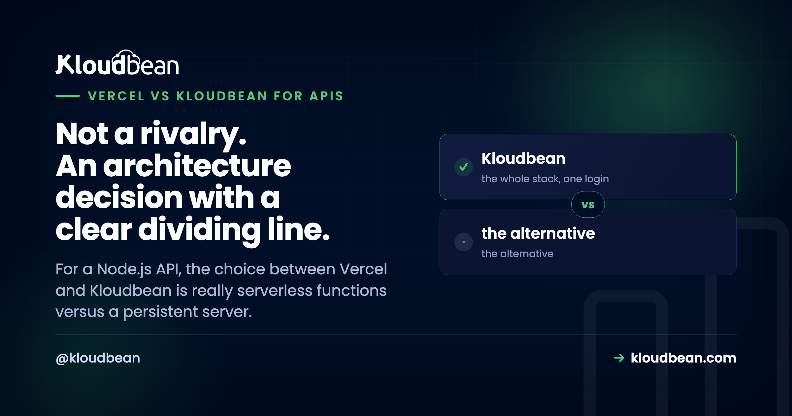

Vercel vs Kloudbean for APIs: Serverless Functions or a Persistent Server?

Comparing Vercel and Kloudbean for an API isn't really comparing two companies, it's comparing two execution models. Vercel runs your endpoint as a function that starts, handles a request, and goes away. Kloudbean runs your API as a Node process that stays up. Almost every practical difference below falls out of that single fact, and the dividing line is genuinely easy to find once you know what to look at. So let's skip the marketing and go criterion by criterion.
Use Vercel for short, stateless endpoints, especially alongside a Next.js frontend, where per-request scaling is an advantage. Use a persistent server like Kloudbean when your API needs to run long, hold state or connections between requests, process durable background jobs, serve WebSockets, or handle high traffic on a predictable bill. The dividing line is whether your endpoints are request-shaped or process-shaped.
The one difference everything else comes from
On Vercel your API code runs as a function. It's invoked, it responds, it can be torn down. Nothing persists between invocations by default, no in-memory cache, no open connection pool, no running job loop. That model is genuinely excellent for spiky, stateless traffic: it scales out without you configuring anything and you're not paying for idle.
On Kloudbean your API is a Node process running always-on under PM2. It boots once, holds its database pool, keeps in-memory state if you want it, and can run a worker loop or hold WebSocket connections for hours. You're paying for a server whether it's busy or not, which is the honest tradeoff, and in return nothing is request-scoped.
Neither is a better idea in the abstract. What matters is which one matches the shape of your endpoints.
Duration limits
The most-quoted difference, and the most out-of-date in people's heads. Old Vercel plans capped functions at roughly 10 seconds on Hobby and 60 on Pro, and those numbers still circulate everywhere. They're historical. Per Vercel's current limitations docs, functions default to around 300 seconds, with Pro reaching up to 800 seconds and an extended maximum near 1,800 for supported Fluid Compute configurations. That's a big improvement and it removes the pain for most endpoints.
What hasn't changed is that a ceiling exists. A persistent server has no platform-imposed limit on your own request handling, which matters for report generation, large exports, slow third-party or AI calls, and data migrations. If your slowest endpoint is comfortably inside the limit, this criterion is a tie and you should ignore it.
Cold starts
A function that's gone idle has to initialize on the next request, which adds latency, worst on low-traffic endpoints with big dependency trees or heavy SDK initialization. Vercel has genuinely improved this with Fluid Compute and reports that 99.37% of requests see zero cold starts on its own workload. Worth crediting, and worth reading precisely: that's a vendor-reported platform statistic rather than an independent benchmark, and it doesn't promise your quiet endpoint never cold-starts. A persistent process sidesteps the question, since it's already warm.
Background jobs and WebSockets
Here the models diverge sharply, and it's usually the deciding factor. Because a function can be torn down after responding, fire-and-forget work isn't safe by default. Fluid Compute adds background processing, but it's still bound by function limits and metered, and it isn't a durable queue with retries and dead-letter handling. In practice teams add Inngest, Trigger.dev, QStash, or a cloud queue, meaning your API is now Vercel plus another vendor.
On a persistent server you run a worker beside the API and point BullMQ at managed Redis. That's it. Same for WebSockets: Vercel's docs do support them via Functions with Fluid Compute, but they follow function duration and pricing rules, need reconnect handling, and require external state for rooms and presence. A long-lived Node process running ws or Socket.IO with a Redis adapter is simply the native shape for that workload.
Database connections
The quiet one that bites under load. Each function instance can open its own database connection, so a burst of invocations can open a burst of connections and exhaust your database's limit. It's a well-known friction point for Postgres, MySQL, and MongoDB, and for ORMs like Prisma, Sequelize, Mongoose, Drizzle, and TypeORM that assumed a long-lived process. The fixes (serverless-aware drivers, a pooling proxy, hosted adapters) all work, and all add moving parts. A persistent server holds one stable pool, so the problem doesn't arise.
Side by side
| Vercel (functions) | Kloudbean (persistent) | |
|---|---|---|
| Execution model | Invoked per request | Always-on Node under PM2 |
| Duration limit | ~300s default, up to 800s or ~1,800s on Pro with Fluid Compute | No platform limit on your handlers |
| Cold starts | Possible when idle, much reduced by Fluid Compute | None, process stays warm |
| Durable background jobs | External queue service needed | Worker plus managed Redis, same server |
| WebSockets | Supported within function limits, external state | Native on a long-lived process |
| Database connections | Per-invocation, pooling proxy often needed | One stable pool |
| Scaling | Automatic, per request | Resize the server, or add a load balancer |
| Cost shape | Invocations, active CPU, memory, transfer, edge requests | Flat from $8/mo, no egress metering |
| Best at | Next.js frontends, short stateless APIs | Persistent APIs, workers, real-time, heavy DB use |
Cost shape, honestly
Vercel bills a combination: invocations, active CPU, provisioned memory, fast data transfer, fast origin transfer, and edge requests. For a predictable frontend that's fine. For an API whose traffic you don't fully control it's harder to forecast, and the failure mode people report is a spike they didn't cause, one developer reported an unexpected bill near $1,141 dominated by data transfer, and bot traffic hitting public endpoints is a recurring trigger. Vercel does offer spend management, though it's opt-in for Pro teams, so it protects you only if you enabled it first.
A flat server plan is the other shape: you pay the same whether traffic is quiet or busy, which is worse for a genuinely idle project and better for anything with real or unpredictable volume. Kloudbean starts at $8/mo and doesn't meter egress, so a scraper hammering your API is an annoyance rather than an invoice. Neither model is dishonest. One optimizes for not paying for idle, the other for knowing the number.

How to decide in about a minute
Run through this and you'll have your answer. If your API is short, stateless endpoints that mostly read and write a database, and especially if it lives alongside a Next.js frontend, stay on Vercel. It's genuinely good at that and moving buys you nothing.
If any two of these are true, use a persistent server: an endpoint that runs long or times out, background jobs you need retried reliably, WebSockets or server-sent events, database connection exhaustion under bursts, high or bot-exposed traffic volume, or a bill you can't forecast. My honest opinion after watching plenty of these decisions: the moment a queue enters the design, the persistent server has already won, because everything else you'd bolt on to avoid one costs more in vendors and complexity than the server does.
And the answer a lot of teams land on isn't either-or. Keep the Next.js frontend on Vercel, run the API on a persistent server, connect them over HTTPS. We wrote the step-by-step for that split in moving your API off Vercel.
More on vercel vs Kloudbean for APIs
More depth: Vercel for Node.js backends for the full constraint list, a Vercel alternative for full-stack apps, and best managed Node.js hosting for the wider field. On the specifics: connection pooling, background jobs with BullMQ, scaling WebSockets, and CORS when you split origins.
A rehoming, not a rewrite.
Standard code moves onto a standard Linux server, so this is a migration rather than a rewrite. Pick from seven clouds, keep push-to-deploy, and get help moving the first workload across.
- ✓ Free migration assistance
- ✓ Free trial
- ✓ Seven cloud providers
- ✓ Flat monthly price
- ✓ Managed databases
- ✓ Git deploy
FAQ
Is Vercel good for APIs?
For short, stateless endpoints, yes, and per-request scaling is a real advantage. It gets harder when the API needs to run long, keep state or connections between requests, process durable background jobs, or serve WebSockets, because functions are request-scoped by design. That's an architectural fit question rather than a quality one.
What's Vercel's function duration limit now?
Per Vercel's current docs, functions default to around 300 seconds, with Pro reaching up to 800 seconds and an extended maximum near 1,800 for supported Fluid Compute configurations. The widely quoted 10-second Hobby and 60-second Pro limits are historical. A ceiling still exists, so genuinely long work needs a queue or a persistent server.
Can I run background workers on Vercel?
Not as durable long-running workers. Fluid Compute adds background processing after a response, but it's bound by function limits and metered, and it isn't a queue with retries and dead-letter handling. Teams usually add an external job service. On a persistent server you run a worker process beside the API with managed Redis and BullMQ.
Why do my database connections run out on serverless?
Because each function instance can open its own connection, so a burst of invocations creates a burst of connections and exhausts the database's limit. It's common with Prisma, Sequelize, Mongoose, Drizzle, and TypeORM, which assumed a long-lived process. Serverless-aware drivers or a pooling proxy fix it; a persistent server avoids it by holding one stable pool.
Is Vercel or a persistent server cheaper for a high-traffic API?
It depends on traffic shape, but predictability differs sharply. Vercel combines invocations, active CPU, provisioned memory, and data transfer, which is hard to forecast and exposed to bot traffic; one developer reported an unexpected bill near $1,141 driven mostly by transfer. A flat plan with no egress metering costs the same busy or quiet, which is usually better once volume is real.
Can I keep my frontend on Vercel and move only the API?
Yes, and it's the setup many teams settle on. Host the Next.js frontend on Vercel, run the API as a persistent Node server on its own subdomain, and connect over HTTPS. The three things to handle are CORS, cross-origin cookies or bearer tokens for auth, and the database connection string. Migrate endpoint by endpoint rather than all at once.